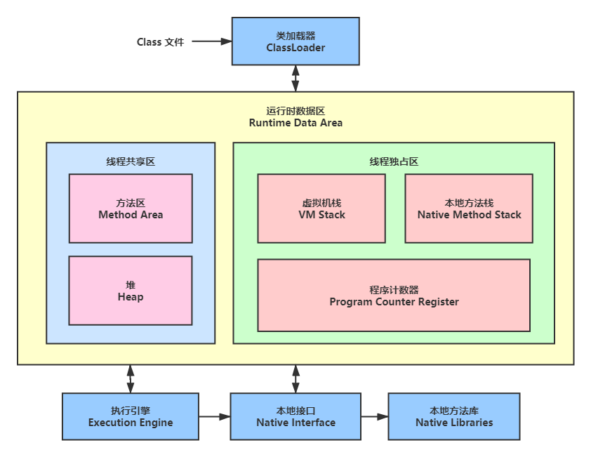
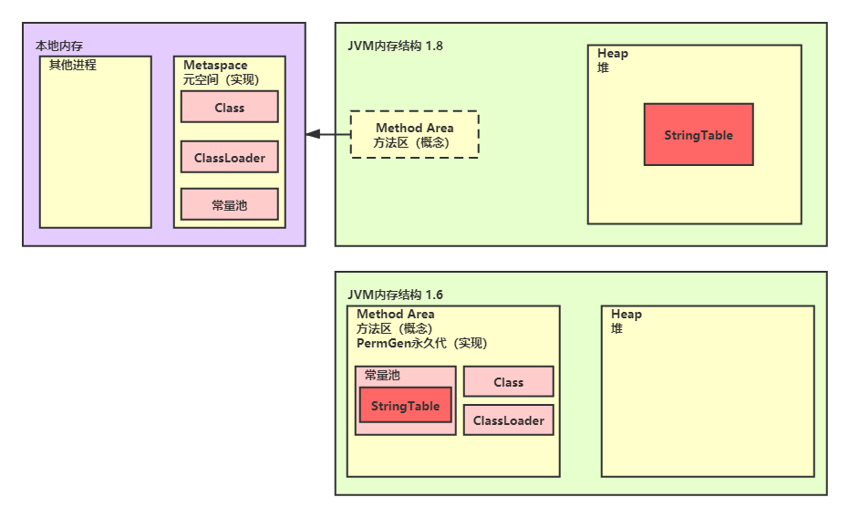

JVM(一)-内存结构

1 程序计数器
- 作用：记住下一条jvm指令的执行地址
- 通过寄存器实现（寄存器是CPU读取速度最快的一个单元）
- 特点：
- 线程私有
- 不会内存溢出
2 虚拟机栈
2.1 定义
Java Virtual Machine Stacks（Java虚拟机栈）
- 每个线程运行需要的内存，称为虚拟机栈
- 每个栈由多个栈帧(Frame)组成，栈帧为每个方法分配运行空间，运行完毕自动释放
- 每个线程只有一个活动栈帧，对应正在执行的方法
问题辨析：
1.垃圾回收是否涉及栈内存
不需要垃圾回收，方法执行完毕自动出栈释放内存
2.栈内存分配越大越好吗？
不好，值越大内存占用越多，间接减少线程数量
3.方法内的局部变量是否线程安全？
- 如果方法内局部变量没有逃离方法的作用范围，它是线程安全的。
- 如果是局部变量引用了对象，并逃离方法的作用方法，需要考虑线程安全问题
2.2 栈内存溢出
- 内存溢出报错：java.lang.StackOverflowError
- 设置参数：-Xss1M
栈帧太多导致（递归）
栈帧太大导致（可能为变量过多，很少遇到）
2.3 线程运行诊断
案例1：cpu占用过多
定位：
- 用top定位哪个进程堆cpu的占用过高
- ps H -eo pid,tid,%cpu | grep 进程id（此处查看哪个线程占用）
- jstack 进程id（此处通过上一步的线程id转换为16进制，对比nid就可以知道哪行代码了）
案例2：程序运行很长的时间没有结果
定位：
- 死锁排查可通过 top | grep java 查看重复出现的进程，可以定位
- jstack 进程id
3 本地方法栈
存放的是native方法（Object对象有native方法）
4 堆
4.1 定义
通过new创建的对象都放在堆中
特点：
线程共享，有线程安全问题
有垃圾回收机制
4.2 堆内存溢出
- 内存溢出报错：java.lang.OutOfMemoryError：Java heap space
- 参数控制：-Xmx8m
new 对象过多导致
4.3 堆内存检测工具
1.先通过jps查看java进程信息
2.然后通过jmap -heap %进程ID 查看内存快照信息，可观察Eden space的变化
3.通过jconsole观察内存变化图
4.通过jvisualvm工具察看变化图
5 方法区

5.1 定义
线程共享
存储类的结构，包括字段、方法数据、方法代码、构造方法
5.2 方法区内存溢出
1.8及以后（元空间实现）
(java.lang.OutOfMemoryError:Metaspace)
-XX:MaxMetaspaceSize=8m
1.8以前（永久带实现）
(java.lang.OutOfMemoryError:PermGen)
-XX:MaxPermSize=8m
spring与mybatis都是用了cglib，底层就是动态类加载，会使用非常多的方法区内存，所以有可能溢出
5.3 运行时常量池
- 常量池，就是一张表，虚拟机指令根据这张常量表找到要执行的类名、方法名、参数类型、字面量等信息
- 运行时常量池，常量池时 *.class文件中的，当该类被记载，它的常量池信息就会放入运行时常量池，并把里面的符号地址变为真实地址
5.4 StringTable
- 常量池中的字符串仅是符号，第一次用时才变为对象
- 利用串池的机制，避免重复创建字符串对象
- 字符串变量拼接原理是stringbuilder（1.8）
- 字符串常量拼接原理是编译器优化
- 字符串加载也是延迟成为对象T
可以使用intern方法， 主动将串池中还没有的对象放入串池
- 1.6是将自身复制放入串池，1.8是将本身放入串池
可以被垃圾回收
5.5 StringTbale 性能调优
- 调整桶个数-XX:StringTableSize=200000
- 考虑常量是否入池